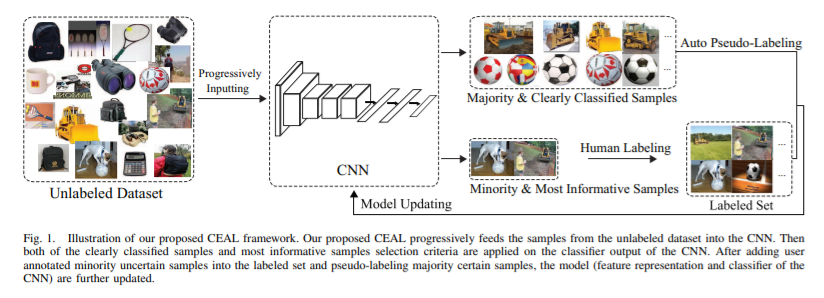
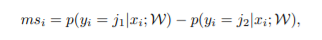
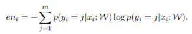

简要
本文提供了一个为图像分类的Active Learning框架。
文章梳理
Introduction
介绍部分主要是概括的批判了一番当时主流的Active Learning的方法。包括：
- 在选择sample时，置信度很高的unlabeled sample被忽略。
- 选择sample和CNN分类不统一。
然后，文章概括了他们提出的框架：
- 对于low prediction confidence sample，使用人工标注，具体方法包括least confidence(LC)，margin sampling(MS)， entropy(EN)。
- 对于大量的high prediction confidence sample，直接使用预测的方法为label。(最大的改进点，减少了标注数量，同时使用了low confidence sample的信息）
然后对于使用high prediction confidence的引入，作者陈述了motivation：1. 由于在feature space中，这些sample和labeled sample距离很近，所以可以看作一种data augmentation的方法。2. 使用大量的pseudolabeling，可以有助于提取鲁棒性feature。
之后，在这个section作者还提及的active learning的训练方法。由简入繁。先定一个很高的阈值，随着训练的增加，阈值逐渐降低（后面自己打脸。。。）。
related work
到了喜闻乐见的批判其他方法的section了。这里主要是分析了其他work的缺点，在此略过吧。
Cost Effective Active learning
这个section就是讲述自己的框架以及具体实现了。首先贴一张图。

如图所示，这个框架先是从零开始。即DL(labeled set)为空。然后，迭代以下算法：每次选取一些unlabeled sample放到classifier中，如果置信度高，则直接使用pseduolabel，否则，使用人工标注。
置信度的判断是一个重点，文章描述了三种置信度标准：


应该还蛮简单的吧。作者在后面的实验部分用了EN来做为标准，声称EN包括这个sample对所有可能label的预测。
然后就到了我之前提及的打脸阶段，作者说threshold要随着时间降低，因为unlabeled sample越来越少，所以为了保证置信度，阈值要降低。
值得一提的是，虽然在更新参数时使用了pseudolabel，在更新完之后，只有人工标注的sample被放进了DL。
实验部分
略
总结：论文的方法已经被广泛使用，所以从今天的角度来看的话，没有什么眼前一亮的感觉。不过这也正反映了这个框架被广泛接受。